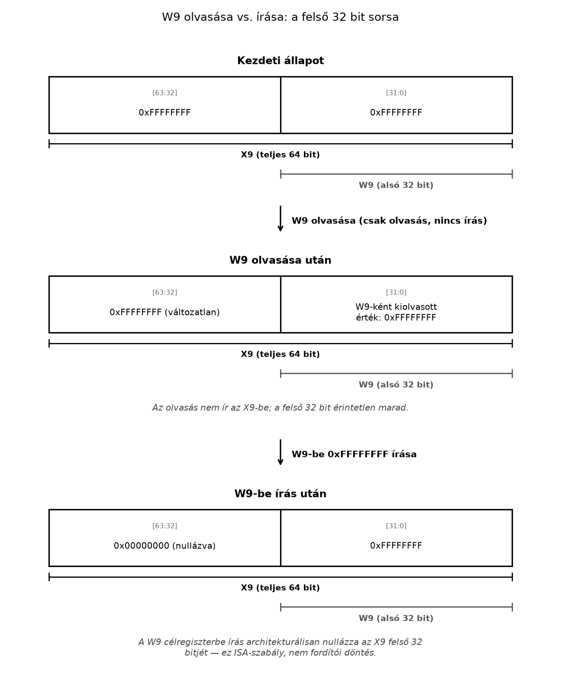

Egy C-függvényben ugyanazt az értéket tárolhatod
uint64_t, majd uint32_t típusú változóban.
Assemblyben viszont nemcsak az érték szélességét kell megválasztanod:
tudnod kell azt is, hogy egy 32 bites művelet mit tesz a hozzá tartozó
64 bites regiszter többi bitjével. Egy rosszul megválasztott
regiszternév például elveszítheti egy 64 bites érték felső felét.
A regiszter (register) az utasítások által közvetlenül megnevezhető, rögzített szélességű processzorállapot. Nem C-változó: nincs hozzá automatikusan típus, élettartam vagy memóriacím rendelve. Egy általános célú regiszter bitmintája értelmezhető egész számként vagy címként; az értelmezést az utasítás és a program szerződése adja.
Ebben az alfejezetben minden utasítás és regiszternév az A64
ISA, AArch64, Armv8-A alapprofil része. A labor little-endian
Linux-folyamatként, qemu-aarch64 alatt fut. A korábbi debug-eszközök használatára építünk; memóriát még
nem kell kezelned.
Az A64 ISA általános célú regiszterei (general-purpose registers):
X0, X1, …, X30, egyenként 64 bit szélességgel.
Mindegyikhez tartozik egy 32 bites nézet: W0, W1, …, W30. Az azonos sorszámú Xn és Wn nem két külön tároló. A Wn az Xn alsó 32 bitjének elérésére szolgál.
A regiszterek többségét az ISA hasonlóan kezeli, de a függvények együttműködéséhez szerepeket rendelünk hozzájuk. Ezeket az eljáráshívási szabvány (Procedure Call Standard), itt az AAPCS64 rögzíti.
| A64 regiszter, 64/32 bites nézet | Előzetes, konvencionális szerep |
|---|---|
| X0–X7 / W0–W7 | Egész és mutató jellegű argumentumok; az eredményátadásban is szerepet kapnak |
| X8 / W8 | Közvetett eredmény helyének átadása bizonyos függvényhívásoknál |
| X9–X15 / W9–W15 | Ideiglenes értékek; függvényhíváson át nem garantált a megőrzésük |
| X16–X17 / W16–W17 | IP0/IP1 (intra-procedure-call): a hívás és a hívott függvény belépése között (linker-veneer, PLT) szabadon felülírható segédregiszterek |
| X18 / W18 | Platformfüggő szerep; hordozható kódban ne foglald le önkényesen |
| X19–X28 / W19–W28 | A hívott függvény által megőrzendő regiszterek |
| X29 / W29 | Az X29 szokásos szerepe a keretmutató, FP; megőrzendő |
| X30 / W30 | Az X30 a visszatérési címhez használt kapcsolatregiszter, LR |
A „megőrzendő” azt jelenti: ha a hívott függvény módosítja a regisztert, visszatérés előtt helyre kell állítania az eredeti értékét. A táblázat ilyen kötelezettsége a teljes, 64 bites értékre vonatkozik.
A szerep és a hardverképesség nem ugyanaz. Az A64 X0 például nem
kizárólag argumentumot tárolhat. Az A64 X30 azonban bizonyos
utasításoknál különleges architekturális szerepet is kap: a
BL ide írja a visszatérési címet. A részletes szerződést Az AAPCS64 regiszterszerződés tárgyalja.
Az A64 Wn olvasása az Xn alsó 32 bitjét adja vissza, a felső biteket pedig figyelmen kívül hagyja. Az olvasás önmagában nem módosítja az Xn értékét.
Az A64 Wn célregiszterbe történő írás viszont:
Ez ISA-szabály, nem fordítói optimalizálás.
Legyen az A64 Xn előjel nélküli, 64 bites értéke. A Wn olvasásával kapott érték:
Ha egy utasítás a Wn célregiszterbe a 32 bites eredményt írja, ahol , akkor utána:
Az értékek mértékegység nélküli egészek; a szélességek bitben értendők. A második összefüggés azért igaz, mert a felső fél nulla lesz: ez nullakiterjesztés (zero extension), nem előjelkiterjesztés.
| A64 művelet | Kezdőállapot | Következmény |
|---|---|---|
| W9 olvasása | X9 = 0xffffffffffffffff |
A kiolvasott 32 bites minta 0xffffffff; X9
változatlan |
W9-be 0xffffffff írása |
X9 tetszőleges | X9 = 0x00000000ffffffff |
| X9-be teljes 64 bites érték írása | X9 tetszőleges | Mind a 64 bit az új értékből származik |
A 0xffffffff bitminta 32 bites, előjeles kettes
komplemens számként −1. Ugyanez a minta a nullázott felső féllel, 64
bites előjeles számként már 4294967295.
Az alábbi ábra ugyanezt a három sort mutatja egymás után, a táblázat sorrendjében: a kezdeti X9, majd a W9 olvasása (nincs hatás), majd a W9-be írás (a felső 32 bit nullázódik).

C-kapcsolatként: egy uint32_t érték
uint64_t típusra alakítása hasonló nullakiterjesztést
igényel. Egy negatív int32_t érték int64_t
típusra alakításához viszont előjelkiterjesztés kell. A Wn-be
írás nem következtet C-típusra.
Az SP veremmutató (stack pointer) 64 bites, speciális regiszter. A verem aktuális határát jelöli; nem az X0–X30 készlet egy újabb tagja.
Az A64 ISA bizonyos utasításformákban 32 bites WSP nézetet is biztosít, de 64 bites címek kezeléséhez ez nem helyettesíti az SP-t. Ebben a laborban egyiket sem módosítjuk. Az AAPCS64 nyilvános hívási határokon 16 bájtos veremigazítást követel meg; ennek indoklása A stack frame felépítése és a verem iránya témája.
A programszámláló (program counter), PC, az
utasításvégrehajtás helyét határozza meg. A GDB megmutatja, de az A64
ISA-ban nem általános célú operandus: nem olvasható vagy írható egy
közönséges MOV utasítással. PC-relatív címet ADR/ADRP adja,
a visszatérési címet BL írja X30-ba.
A végrehajtási helyet elágazás, hívás, visszatérés vagy kivétel módosíthatja. A debugger PC-módosító képessége nem jelenti azt, hogy létezik ugyanilyen A64 regisztermásoló utasítás.
A nulla-regiszter (zero register) 64 bites neve XZR, 32 bites neve WZR.
Az eredmény eldobása nem feltétlenül szünteti meg az utasítás más mellékhatásait.
Fontos kódolási részlet: az A64 utasítások számos regisztermezője 5 bites. A 31-es mezőérték nem egy szabadon használható X31 regisztert jelöl: az adott utasításformától és operandushelytől függően SP-t vagy nulla-regisztert jelenthet, illetve az adott forma korlátozhatja használatát. Az SP és az XZR ezért nem felcserélhető.
Az A64 processzorállapot (processor state), PSTATE, többek között állapotjelzőket tartalmaz. A később használt négy jelző:
| A64 állapotjelző | Előzetes jelentés |
|---|---|
| N | Az eredmény előjelbitjéhez kapcsolódik |
| Z | Nulla eredményt jelez |
| C | Átvitelhez, illetve kivonásnál kölcsönzéshez kapcsolódik |
| V | Előjeles túlcsordulást jelez |
Együttes nevük NZCV. Nem minden aritmetikai vagy adatmozgató utasítás módosítja őket. Különösen: az A64 Wn-be írás felsőbites nullázása nem azonos a Z jelző beállításával.
A labor adatmozgató utasításai nem módosítják az NZCV jelzőket. A pontos szabályokat Az NZCV állapotjelzők és eredetük fejti ki.
Munkakönyvtár: ~/arm-labor/a64/a010/ —
az alfejezet minden laborfájlja ide kerül, és minden parancs innen
futtatandó (a könyvtárrendet a Labor-alapkörnyezet alfejezet írja le).
mkdir -p ~/arm-labor/a64/a010
cd ~/arm-labor/a64/a010A labor célja három külön tulajdonság megfigyelése:
Mentsd a következő teljes programot lab-a010.s
néven:
// A64 ISA, Armv8-A; GNU as szintaxis és direktívák.
// Cél: little-endian AArch64 Linux, qemu-user.
.arch armv8-a
.text
.balign 4
.global _start
.type _start, %function
_start:
movn x9, #0
lab_after_seed:
mov w10, w9
lab_after_read:
mov w9, w10
lab_after_write:
mov x11, xzr
mov xzr, x10
mov w12, wzr
lab_done:
movz x0, #0
movz x8, #93
svc #0
.size _start, . - _start
.section .note.GNU-stack,"",%progbitsAz itt használt GNU as direktívák az AArch64 forrás szekcióját, igazítását és szimbólumait írják le; nem processzorutasítások. Részletes szerepükre a Hello world tisztán assemblyben tér vissza.
Az A64 MOVN X9, #0 a nullából képzett 64 bites bitminta
bitenkénti negáltját írja be, tehát minden bitet egyre állít. A
MOVN közvetlen konstansa (immediate operand) 16
bites; X célregiszternél a választható eltolás 0, 16, 32 vagy 48 bit.
Itt az eltolás az alapértelmezett 0.
Az A64 regiszterek közötti MOV itt másoló utasításalias:
nincs közvetlen konstansa. Az A64 MOVZ 16 bites konstanst
helyez el, a többi bitet nullázva. X célregiszternél ugyanazok az
eltolások választhatók; a labor 0 eltolást használ.
A programvégi A64 utasítások Linux-kilépési keretet alkotnak: X0
értéke az előjel nélküli 0 kilépési kód, X8 értéke a Linux AArch64
exit rendszerhívás 93-as száma. Az A64 SVC 16
bites immediate mezője itt 0; nem ez választja ki a rendszerhívást. Ez
Linux-interfész, nem AAPCS64-függvényhívás: lásd Linux syscall-konvenció AArch64-en.
# Host: Ubuntu 24.04 x86_64.
# Target: qemu-user, little-endian AArch64 Linux.
aarch64-linux-gnu-as -EL -march=armv8-a -g \
-o lab-a010.o lab-a010.s
aarch64-linux-gnu-ld -EL -e _start \
-o lab-a010.elf lab-a010.o
qemu-aarch64 ./lab-a010.elf
printf 'exit=%d\n' "$?"Mért eredmény (mérve: GNU as 2.42, QEMU 8.2.2): a
program nem ír ki szöveget; a shell exit=0 sort jelenít
meg. Ez csak a szabályos befejezést igazolja, nem a köztes
regiszterállapotokat.
Az első terminálban:
# Target: qemu-user; a program debuggerkapcsolatra vár.
qemu-aarch64 -g 1234 ./lab-a010.elf
printf 'exit=%d\n' "$?"A második terminálban:
# Target: az előző qemu-user folyamat A64 regiszterállapota.
gdb-multiarch -q ./lab-a010.elf \
-ex 'target remote localhost:1234' \
-ex 'break lab_after_read' \
-ex 'break lab_after_write' \
-ex 'break lab_done' \
-ex 'continue' \
-ex 'info registers x9 x10 pc' \
-ex 'continue' \
-ex 'info registers x9 x10 pc' \
-ex 'continue' \
-ex 'info registers x9 x10 x11 x12 sp pc' \
-ex 'continue' \
-ex 'quit'A töréspont a címkéhez tartozó következő utasítás előtt állít meg.
| Megállási hely | Mért A64 regiszterállapot (GDB 15.1, QEMU 8.2.2) |
|---|---|
lab_after_read |
X9 = 0xffffffffffffffff, X10 =
0x00000000ffffffff |
lab_after_write |
X9 = X10 = 0x00000000ffffffff |
lab_done |
X9 és X10 változatlan; X11 = 0, X12 = 0 |
A hexadecimális bejegyzések bitminták; a nulla itt előjel nélküli
értékként szerepel. A GDB a vezető nullákat nem írja ki; a második
oszlop az előjeles decimális érték. Teljes 64 bites hexához:
p/x $x10 vagy info registers +
x/gx. Az SP-t a program nem módosítja. A PC konkrét száma
helyett a megfelelő szimbólumhoz tartozást ellenőrizd.
A lab_after_read megállás mutatja az olvasás és írás
különbségét: a W9 forrás olvasása megőrzi az X9 felső bitjeit, miközben
a W10 cél írása már nullázza az X10 felső felét.
„A W9 és az X9 két külön regiszter.”
Tünet: egy 32 bites művelet után eltűnik a korábban X9-ben tárolt 64
bites érték felső fele. Hipotézis: az utasítás W9-et írta. Állj meg
előtte és utána; mindig az egész X9-et vizsgáld.
„A W9-be írt −1 automatikusan 64 bites −1
lesz.”
Nem: az A64 W9-be írás nullakiterjeszt. Az ellenpróba a labor
lab_after_write állapota. A szükséges előjelkiterjesztés
külön művelet, nem regisztertulajdonság.
„Az XZR ideiglenes tároló.”
A beleírt érték elveszik. Egyetlen változtatásként cseréld a labor
mov w12, wzr utasítását mov x12, xzr alakra:
X12 továbbra is nulla, noha korábban X10-et „beleírtuk” az XZR-be.
„Az utasítás helyesnek látszik, de a debugger mást
mutat.”
Először gyűjts bizonyítékot a tényleges binárisból:
# Target: a qemu-userhez épített A64 ELF statikus vizsgálata.
aarch64-linux-gnu-objdump -d ./lab-a010.elfEllenőrizd a W/X operandusokat, majd egyetlen változtatás után építs újra és indíts új QEMU-folyamatot. A régi folyamat nem cseréli le automatikusan a már betöltött programját.
1. (magyarázó, alapszint — cél: megértés-ellenőrzés)
Miért marad minden bit egy az A64 X9-ben a lab_after_read
ponton, miközben az X10 felső fele nulla? Mennyi ekkor a W10 előjeles,
illetve az X10 előjeles értéke?
2. (implementációs, alapszint — cél: rutinépítés)
Módosítsd a programot úgy, hogy az eredeti, minden bitjén egyes 64 bites
érték az A64 X13-ban a lab_done pontig megmaradjon. Az
eredeti W9-be írást ne töröld. Építsd újra ugyanazokkal a parancsokkal,
és egészítsd ki a GDB regiszterlistáját.
3. (hibakeresési, középszint — cél:
megértés-ellenőrzés) Kontrollált hibaként cseréld az A64
mov w10, w9 utasítást mov x10, x9 alakra.
Előre írd le az X9 és X10 várható értékét mindkét első törésponton.
Ellenőrizd disassemblyvel és GDB-vel, majd egyetlen módosítással állítsd
vissza az eredeti viselkedést.
1. megoldás — Segítség. Különböztesd meg, melyik utasítás CSAK olvassa a forrásregisztert, és melyik ÍR egy célregiszterbe — a kettő között pont ez a nullázási szabály tesz különbséget.
1. megoldás — Teljes megoldás. A W9 csak forrás: olvasása nem módosítja az X9-et. A W10 célregiszter írása viszont nullázza az X10 felső felét. A W10 előjeles, 32 bites értéke −1; az X10 előjeles, 64 bites értéke 4294967295.
2. megoldás — Segítség. A mentést a W9-be írás ELŐTT kell elvégezni, különben már a nullázott érték másolódna. Gondold át, miért nem elég egy W-nézetű (32 bites) mentés.
2. megoldás — Teljes megoldás. A
movn x9, #0 után, de a W9-be írás előtt helyezd el az A64
mov x13, x9 utasítást. A GDB-listába kerüljön
x13 is. A lab_done ponton X13 várt bitmintája
0xffffffffffffffff, X9-é 0x00000000ffffffff. A
teljes érték megőrzéséhez 64 bites másolás kell; W13 használata már a
másolat felső felét is nullázná.
3. megoldás — Segítség. A hiba az, hogy a második utasítás immár a TELJES 64 bitet másolja, nem csak az alsót — kövesd végig lépésenként, melyik regiszter melyik félbitje változik.
3. megoldás — Teljes megoldás. A hibás változat
lab_after_read pontján X9 és X10 is
0xffffffffffffffff. A következő, változatlan A64
mov w9, w10 csak az alsó 32 bitet másolja:
lab_after_write esetén X9 már
0x00000000ffffffff, X10 továbbra is
0xffffffffffffffff. Az eredeti 32 bites másolás
visszaállítása helyreállítja a várt állapotokat. A kilépési kód mindkét
változatban 0 lehet, ezért önmagában nem megfelelő ellenőrzés.
Az A64 ISA 31 általános célú, 64 bites regisztert biztosít X0–X30 néven. W0–W30 ezek alsó 32 bites nézete, nem külön tároló. Wn olvasása nem módosítja Xn-t, Wn írása viszont nullázza Xn felső felét. Az SP speciális veremmutató; a PC nem közönséges adatmozgatási operandus. Az XZR/WZR mindig nullát szolgáltat, a beleírt eredményt eldobja. A hívási szerepek együttműködési szabályok, nem általános hardverkorlátozások. Az NZCV külön processzorállapot, amelyet nem minden utasítás módosít. A laborban a köztes állapotokat töréspontonként kell ellenőrizni, mert a sikeres kilépés önmagában nem igazolja őket.
A linkek és a dokumentumverziók közös állapota az Olvasói útmutató forrásállapot-táblájában van; itt csak az alfejezet saját megállapításai szerepelnek.
Ellenőrzési hiányok, amelyek a fenti ellenőrzés után is
fennmaradnak: a közölt értékek a lektor GNU as 2.42 + QEMU
8.2.2 + GDB 15.1 fő útján mért eredményei (mérve). Az
Ubuntu 24.04-re telepített eszközök pontos verzióját és a
GDB-megjelenítést a laborban kell ellenőrizni. A gyakorlat
ISA-viselkedést vizsgál, nem hardverhű végrehajtási időt.